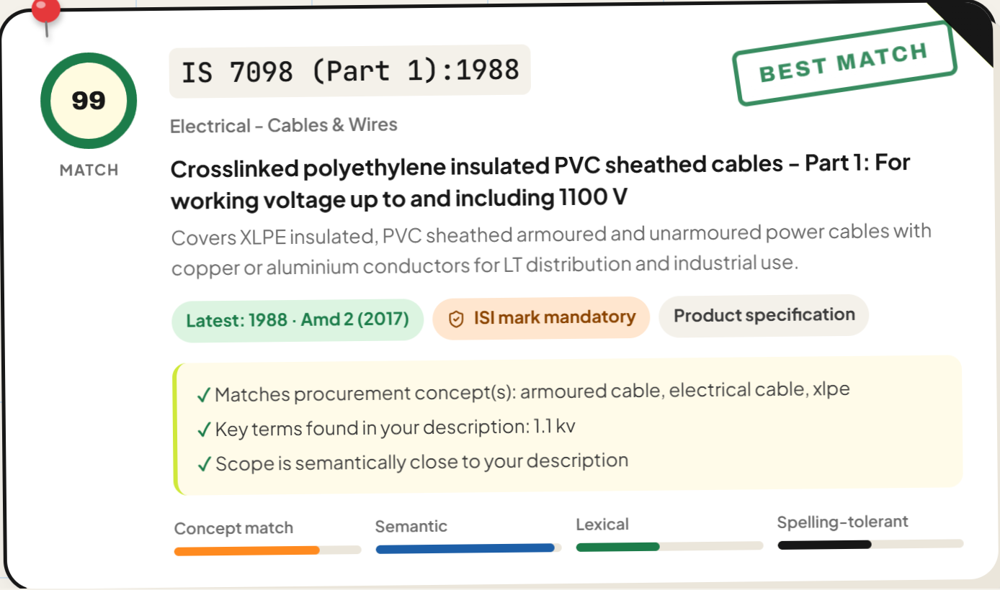
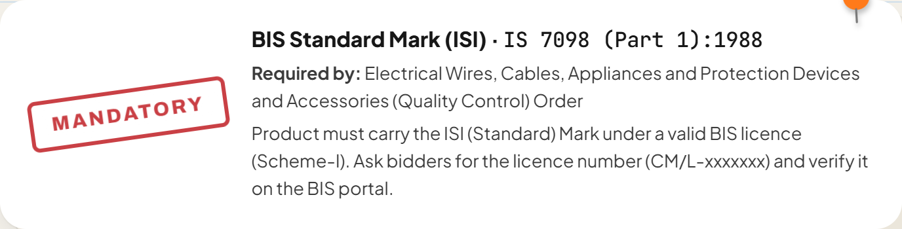
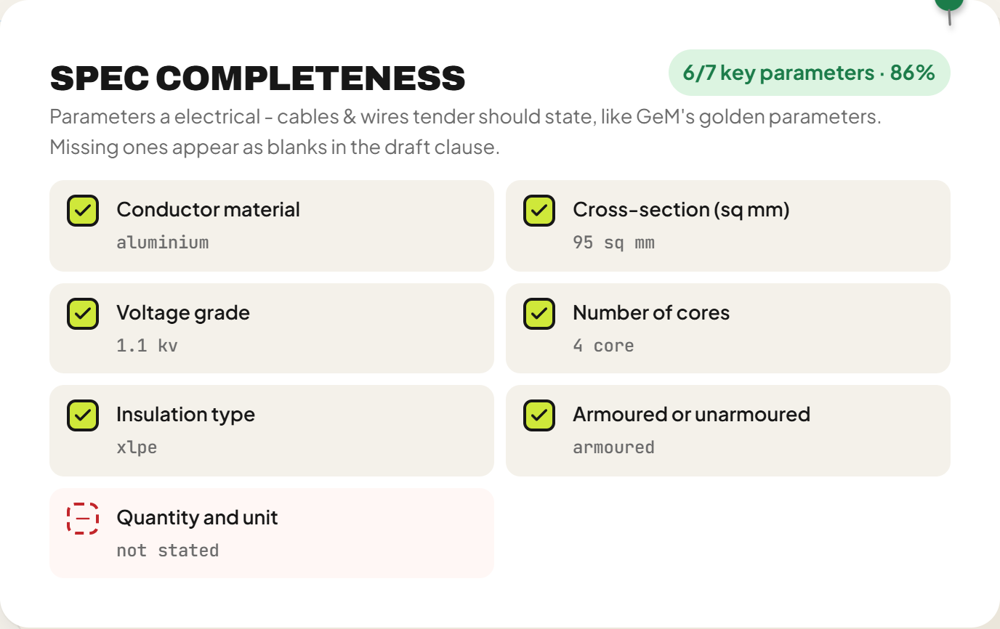
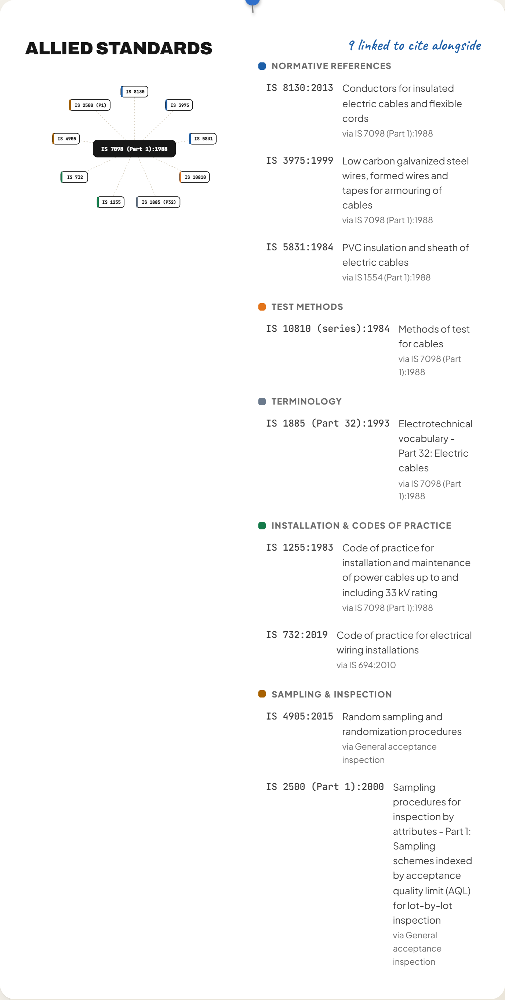
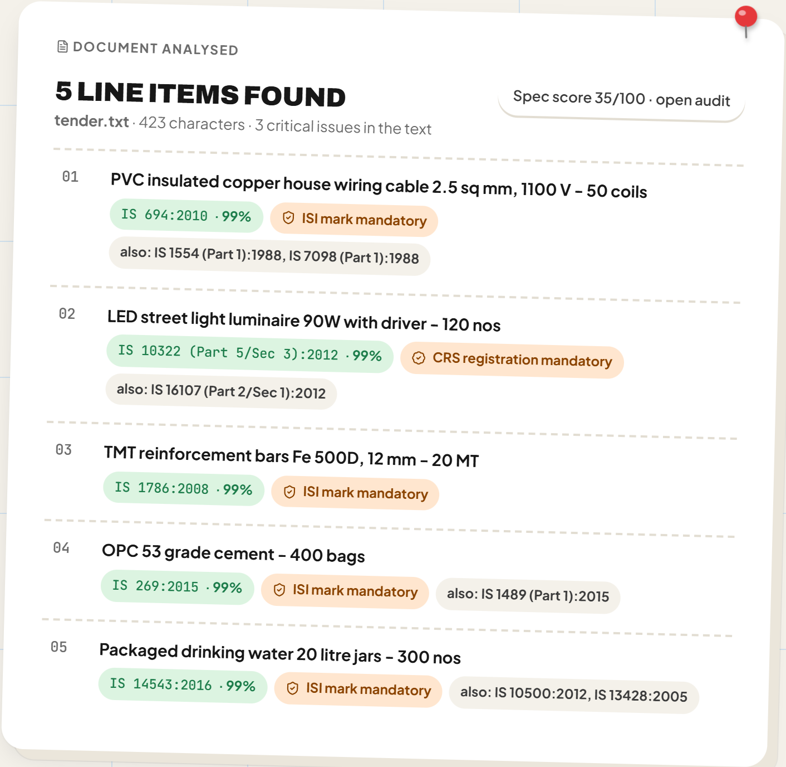
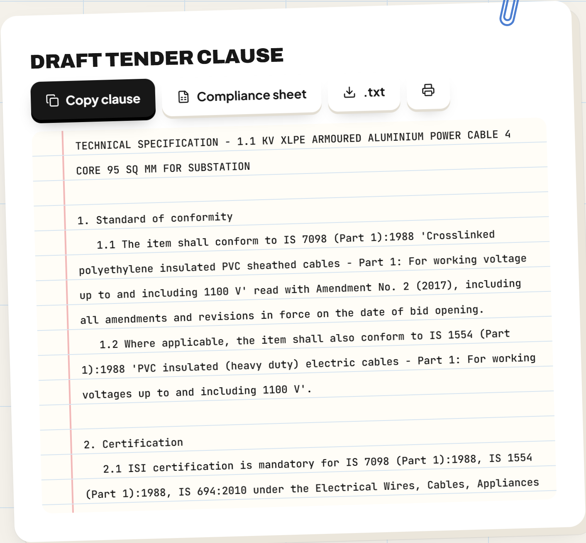
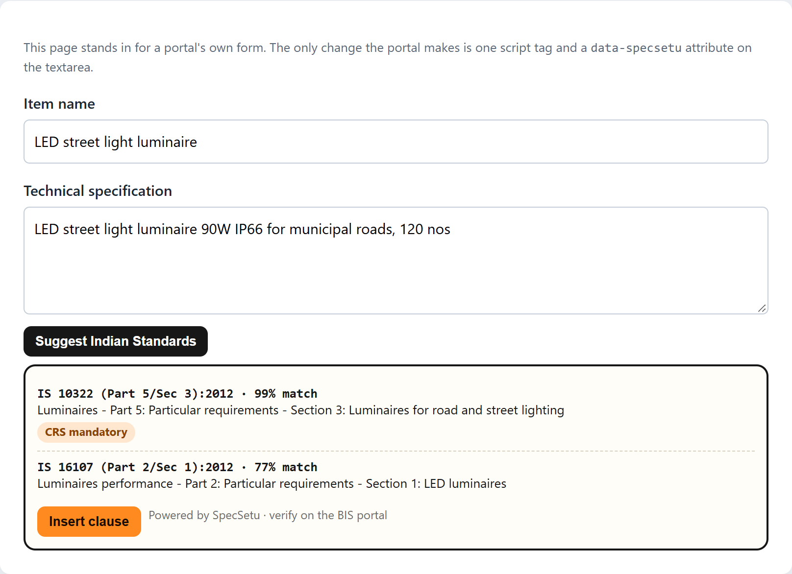
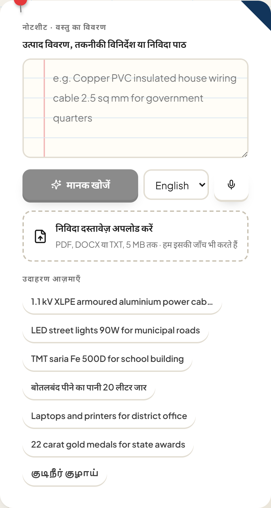
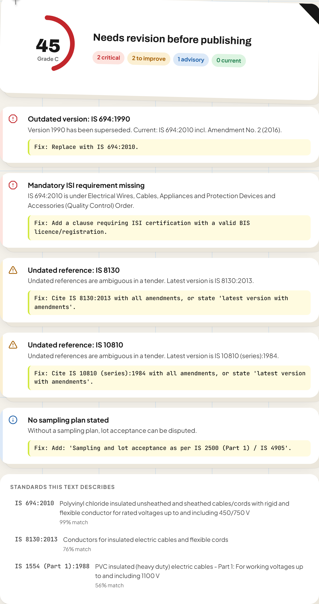
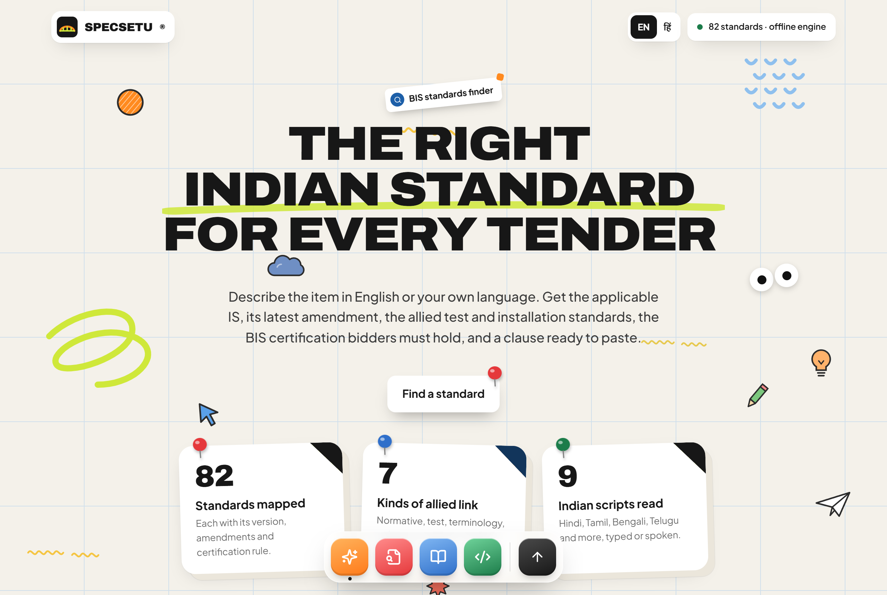

The bridge from procurement specifications to Indian Standards.
An AI recommendation engine that reads a product description, technical specification or tender in English or nine Indian scripts and returns the applicable Indian Standard, its latest amendment, the allied standards to cite with it, the BIS certification bidders must hold, and a tender clause ready to paste.
each proven by automated tests
92 backend · 46 end-to-end in Chrome
against BIS, GeM, BIS Care, Accuris, ASTM
Government departments, PSEs and procurement agencies write technical specifications that must cite the correct Indian Standards. Finding them is hard, and mistakes surface late — at bid evaluation, inspection or in a dispute.
…and integrate with the procurement portals officers already use.




The MVP is the full officer loop — describe → recommend → link → certify → draft → audit — working end to end, offline, behind a portal-ready API.
| Capability | What the officer gets | Status |
|---|---|---|
| Describe in any way | Type, speak (5 Indian locales) or upload PDF / DOCX / TXT; natural-language questions work | Live |
| Semantic recommendation | Ranked standards with confidence, reasons and four scoring signals; low-confidence warning | Live |
| Tender line items | An uploaded tender / BOQ is split into items; each gets its standard and certification | Live |
| Allied standards | 7 relation types + sampling plans, as a clickable map and list | Live |
| Versions & amendments | Latest year, last amendment, superseded versions, version timeline | Live |
| Certification intelligence | ISI (QCO), CRS (MeitY/MNRE), Hallmarking + HUID, with what to ask bidders for | Live |
| Tender-ready outputs | Draft clause (copy/download), key-parameter blanks, bidder compliance sheet (CSV) | Live |
| Spec audit | Outdated / undated / unknown citations, missing standard, certification, tests, sampling; 0–100 score | Live |
| Multilingual | 9 Indian scripts offline (Hindi, Marathi, Bengali, Gujarati, Punjabi, Odia, Tamil, Telugu, Kannada, Malayalam); Hindi interface | Live |
| Portal integration | REST API (10 endpoints), batch endpoint for BOQs, drop-in widget | Live |
| Revision watchlist | Watch standards; “What changed” feed of revisions and amendments | Live |
| Certificate check | Format check for CM/L, R-number, HUID + official BIS verification route | Live |
| Learning loop | Officers mark results right/wrong; votes stored as training data | Live |
| NVIDIA Nemotron layer | Any-language translation and re-ranking with reasons via NVIDIA NIM (~1 s); falls back offline | Live |


Existing portals search by IS number or exact keyword. SpecSetu starts from “geyser for hostel”, “saria Fe 500D” or a Hindi sentence and finds the standard by meaning.
Every recommendation brings its allied standards — tests, terminology, safety, installation, sampling — so the spec is complete the first time.
Says whether ISI, CRS or Hallmarking is mandatory, names the Quality Control Order, and tells the officer exactly what to ask bidders for.
Draft clause, key-parameter blanks (GeM-style golden parameters) and a clause-by-clause bidder compliance sheet.
Spec audit flags superseded years, undated references, missing standards, certification, test and sampling clauses — with fixes and a score.
Upload a NIT or BOQ; SpecSetu splits it into line items, skips boilerplate like EMD, and matches each item.
Nine Indian scripts offline, Indic digits, voice input in Indian locales, and a Hindi interface — no paid translation needed.
One script tag adds “Suggest Indian Standards” to any spec box on GeM, CPPP or a state portal. Plus a REST and batch API.
Every match shows its reasons and signals. The engine runs on a plain server with no paid AI; NVIDIA Nemotron is an optional upgrade with automatic fallback.
Officers mark recommendations right or wrong; each vote is a labelled example for tuning the ranking.
Compared from public information (Nov 2026). Each platform does its own job well; SpecSetu fills the gap at the moment a specification is written.
| Capability | SpecSetu | BIS Know Your Standard / e-BIS | BIS Care app | GeM | CPPP | Accuris Eng. Workbench | ASTM Compass |
|---|---|---|---|---|---|---|---|
| Find a standard from a plain product description | ● | ◐ | ○ | ◐ | ○ | ● | ◐ |
| Indian Standards as the core catalogue | ◐ | ● | ◐ | ◐ | ○ | ◐ | ○ |
| Latest version and amendments shown | ● | ● | ○ | ○ | ○ | ● | ● |
| Allied standards grouped (tests, terminology, safety, installation) | ● | ◐ | ○ | ○ | ○ | ◐ | ◐ |
| Mandatory certification advice per product (ISI / CRS / Hallmark) | ● | ◐ | ◐ | ◐ | ○ | ○ | ○ |
| Verify licence / R-number / HUID | ◐ | ○ | ● | ● | ○ | ○ | ○ |
| Key-parameter checklist for the spec | ● | ○ | ○ | ● | ○ | ○ | ○ |
| Draft tender clause + bidder compliance sheet | ● | ○ | ○ | ◐ | ○ | ○ | ○ |
| Audit a draft spec for outdated / missing references | ● | ○ | ○ | ○ | ○ | ○ | ○ |
| Upload a tender and match each line item | ● | ○ | ○ | ○ | ○ | ○ | ○ |
| Revision watchlist / alerts | ◐ | ○ | ○ | ○ | ○ | ● | ◐ |
| Indian-language input (offline, 9 scripts) and voice | ● | ◐ | ◐ | ◐ | ○ | ○ | ○ |
| Drop-in widget / API for procurement portals | ● | ○ | ○ | ◐ | ○ | ◐ | ◐ |
| Free to use / no subscription | ● | ◐ | ● | ● | ● | ○ | ○ |
● yes ◐ partly ○ no / not found in public material. Highlighted rows are capabilities where SpecSetu is the only full ●. BIS e-BIS: search by IS number or keyword; free viewing of standards under compulsory certification. BIS Care: verifies CM/L licences, CRS R-numbers and HUIDs. GeM: category specifications with mandatory “golden parameters”; validates seller BIS licences against BIS data. Accuris: AI semantic search, research assistant, update alerts (paid, global catalogue). ASTM Compass Discover: semantic search over ASTM standards (licensed, beta).
BIS stays the source of truth and BIS Care the place to verify a certificate. GeM and CPPP run the purchase. SpecSetu sits between them, inside the drafting step, and hands each of them a cleaner specification.
Benchmarking showed eight things other platforms do that the first prototype did not. All eight are now built, tested and live.
| # | Gap | Seen in | What we built |
|---|---|---|---|
| 1 | Revision tracking | Accuris alerts | Watch any standard; “What changed” feed of revisions and amendments since a chosen year; watched items pinned first (GET /api/updates) |
| 2 | Key parameters of the spec | GeM golden parameters | Per-category checklist (cables, lighting, steel, IT, solar…) showing which parameters the description states; missing ones become blanks in the clause |
| 3 | Certificate checks | BIS Care, GeM validation | Format check for CM/L licence, CRS R-number and HUID with links to official verification (GET /api/certificate/check) |
| 4 | Link to the official standard | BIS Know Your Standard | “Open on BIS” on every standard |
| 5 | Learning from users | Commercial AI search | Right / wrong votes on each recommendation, stored as training data with a summary endpoint |
| 6 | Integration effort | GeM–BIS data link | Drop-in widget: one script tag adds standards suggestions and “Insert clause” to any portal spec box; batch API for BOQs |
| 7 | Bidder compliance statement | GeM / tender practice | One-click clause-by-clause compliance sheet (CSV, opens in Excel) |
| 8 | Hindi interface | BIS, GeM bilingual sites | EN / हिं toggle for the app interface; remembered per browser |


| # | Requirement | How SpecSetu meets it | Proof (automated) |
|---|---|---|---|
| R1 | Descriptions, specifications or tender documents | Text, voice, PDF / DOCX / TXT upload; tenders and DOCX tables split into line items; boilerplate skipped; batch API | backend test_r1_*; E2E R1 (4) |
| R2 | Semantic, not keyword, recommendation | Concept graph + TF-IDF + LSA + character n-grams; colloquial words, typos and questions resolve; low-confidence flag | test_r2_*, engine tests; E2E R2 (3) |
| R3 | Allied standards of every kind | Normative, test, terminology, safety, installation, related product, sampling — grouped and mapped | test_r3_*; E2E R3 (3) |
| R4 | Latest version and amendments | Year, last amendment, superseded versions, timeline; audit flags outdated / undated citations; watchlist feed | test_r4_*, audit tests; E2E R4 |
| R5 | Mandatory certification (BIS, CRS, Hallmarking) | Scheme, mandatory flag, notifying order, bidder guidance; written into the clause; certificate format check | test_r5_* (3); E2E R5 (3) |
| R6 | Multilingual and natural language | 9 scripts offline with Indic digits, voice in 5 locales, Hindi UI; optional NVIDIA Nemotron for any language | test_r6_* (10 scripts); E2E R6 (4) |
| + | Integrate with procurement portals | REST API, batch endpoint, drop-in widget, CORS, validation, rate limiting | API tests; E2E widget |
The E2E suite uploads a five-item notice inviting tender and checks every item:
| Line item in the tender | Standard returned | Certification |
|---|---|---|
| PVC insulated copper house wiring cable 2.5 sq mm, 1100 V | IS 694:2010 | ISI mandatory |
| LED street light luminaire 90W with driver | IS 10322 (Part 5/Sec 3):2012 | CRS mandatory |
| TMT reinforcement bars Fe 500D, 12 mm | IS 1786:2008 | ISI mandatory |
| OPC 53 grade cement | IS 269:2015 | ISI mandatory |
| Packaged drinking water 20 litre jars | IS 14543:2016 | ISI mandatory |
“Earnest money deposit” in the same tender is correctly ignored as boilerplate.

| Method | Path | Purpose |
|---|---|---|
| POST | /api/recommend | Description → standards, allied, certification, checklist, clause |
| POST | /api/recommend/upload | PDF / DOCX / TXT → line items, recommendations, audit |
| POST | /api/recommend/batch | Up to 25 BOQ items → standard and certification each |
| POST | /api/audit | Draft spec → findings, fixes, score |
| GET | /api/updates | Revisions and amendments since a year |
| GET | /api/certificate/check | CM/L, R-number, HUID format + verification route |
| POST | /api/feedback | Officer vote on a recommendation |
| GET | /api/standards · /{id} | Search and reference graph |
| GET | /widget.js | Drop-in portal widget |
| Metric | How we measure it |
|---|---|
| Time to draft the standards section of a spec | Officer time with and without SpecSetu on the same indents |
| Tenders citing superseded standard versions | Spec audit run on published tenders before and after rollout |
| Tenders missing a mandatory certification clause | Audit findings of type “certification” |
| Bidder queries and corrigenda about specifications | Pre-bid query logs of pilot departments |
| Recommendation accuracy | Share of officer votes marked “right”; top-1 match on a labelled set |
Platform capabilities were taken from these public pages in November 2026. Where public material did not confirm a capability, the comparison marks it “○ not found”.
cd backend && pip install -r requirements.txt && python -m uvicorn app.main:app --port 8000
cd frontend && npm install && npm run dev → http://localhost:5173
Tests: cd backend && python -m pytest · cd frontend && npx playwright test
